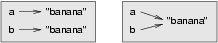
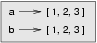
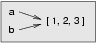
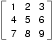

A list is an ordered set of values, where each value is identified by an index. The values that make up a list are called its elements. Lists are similar to strings, which are ordered sets of characters, except that the elements of a list can have any type. Lists and strings---and other things that behave like ordered sets---are called sequences.
9.1 List values
There are several ways to create a new list; the simplest is to
enclose the elements in square brackets ([ and ]):
[10, 20, 30, 40] ["spam", "bungee", "swallow"]
The first example is a list of four integers. The second is a list of three strings. The elements of a list don't have to be the same type. The following list contains a string, a float, an integer, and (mirabile dictu) another list:
["hello", 2.0, 5, [10, 20]]
A list within another list is said to be nested.
Finally, there is a special list that contains no elements. It is called
the empty list, and is denoted [].
Like numeric 0 values and the empty string, the empty list is false in a boolean expression:
>>> if []: ... print 'This is true." ... else: ... print 'This is false." ... This is false. >>>
With all these ways to create lists, it would be disappointing if we couldn't assign list values to variables or pass lists as parameters to functions. We can:
>>> vocabulary = ["ameliorate", "castigate", "defenestrate"] >>> numbers = [17, 123] >>> empty = [] >>> print vocabulary, numbers, empty ['ameliorate', 'castigate', 'defenestrate'] [17, 123] []
9.2 Accessing elements
The syntax for accessing the elements of a list is the same as the syntax
for accessing the characters of a string---the bracket operator
([] -- not to be confused with an empty list). The expression
inside the brackets specifies the index. Remember that the indices start at
0:
>>> print numbers[0] 17
Any integer expression can be used as an index:
>>> numbers[9-8] 5 >>> numbers[1.0] Traceback (most recent call last): File "<stdin>", line 1, in <module> TypeError: list indices must be integers
If you try to read or write an element that does not exist, you get a runtime error:
>>> numbers[2] Traceback (most recent call last): File "<stdin>", line 1, in <module> IndexError: list index out of range
If an index has a negative value, it counts backward from the end of the list:
>>> numbers[-1] 5 >>> numbers[-2] 17 >>> numbers[-3] Traceback (most recent call last): File "<stdin>", line 1, in <module> IndexError: list index out of range
numbers[-1] is the last element of the list,
numbers[-2] is the second to last, and numbers[-3]
doesn't exist.
It is common to use a loop variable as a list index.
horsemen = ["war", "famine", "pestilence", "death"] i = 0 while i < 4: print horsemen[i] i += 1
This while loop counts from 0 to 4. When the loop variable
i is 4, the condition fails and the loop terminates. So the
body of the loop is only executed when i is 0, 1, 2, and 3.
Each time through the loop, the variable i is used as an index
into the list, printing the i-eth element. This pattern of
computation is called a list traversal.
9.3 List length
The function len returns the length of a list, which is equal
to the number of its elements. It is a good idea to use this value as the
upper bound of a loop instead of a constant. That way, if the size of the list
changes, you won't have to go through the program changing all the loops; they
will work correctly for any size list:
horsemen = ["war", "famine", "pestilence", "death"] i = 0 num = len(horsemen) while i < num: print horsemen[i] i += 1
The last time the body of the loop is executed, i is
len(horsemen) - 1, which is the index of the last element. When
i is equal to len(horsemen), the condition fails and
the body is not executed, which is a good thing, because
len(horsemen) is not a legal index.
Although a list can contain another list, the nested list still counts as a single element. The length of this list is 4:
['spam!', 1, ['Brie', 'Roquefort', 'Pol le Veq'], [1, 2, 3]]
9.4 List membership
in is a boolean operator that tests membership in a sequence.
We used it previously with strings, but it also works with lists and other
sequences:
>>> horsemen = ['war', 'famine', 'pestilence', 'death'] >>> 'pestilence' in horsemen True >>> 'debauchery' in horsemen False
Since pestilence
is a member of the horsemen list, the
in operator returns True. Since debauchery
is
not in the list, in returns False.
We can use the not in combination with in to test
whether an element is not a member of a list:
>>> 'debauchery' not in horsemen True
9.5 List operations
The + operator concatenates lists:
>>> a = [1, 2, 3] >>> b = [4, 5, 6] >>> c = a + b >>> print c [1, 2, 3, 4, 5, 6]
Similarly, the * operator repeats a list a given number of
times:
>>> [0] * 4 [0, 0, 0, 0] >>> [1, 2, 3] * 3 [1, 2, 3, 1, 2, 3, 1, 2, 3]
The first example repeats [0] four times. The second example
repeats the list [1, 2, 3] three times.
9.6 List slices
The slice operations we saw with strings also work on lists:
>>> a_list = ['a', 'b', 'c', 'd', 'e', 'f'] >>> a_list[1:3] ['b', 'c'] >>> a_list[:4] ['a', 'b', 'c', 'd'] >>> a_list[3:] ['d', 'e', 'f'] >>> a_list[:] ['a', 'b', 'c', 'd', 'e', 'f']
9.7 The range function
Lists that contain consecutive integers are common, so Python provides a simple way to create them:
>>> range(1, 5) [1, 2, 3, 4]
The range function takes two arguments and returns a list that
contains all the integers from the first to the second, including the first but
not the second.
There are two other forms of range. With a single argument, it
creates a list that starts at 0:
>>> range(10) [0, 1, 2, 3, 4, 5, 6, 7, 8, 9]
If there is a third argument, it specifies the space between successive values, which is called the step size. This example counts from 1 to 10 by steps of 2:
>>> range(1, 10, 2) [1, 3, 5, 7, 9]
If the step size is negative, then start must be greater than
stop
>>> range(20, 4, -5) [20, 15, 10, 5]
or the result will be an empty list.
>>> range(10, 20, -5) []
9.8 Lists are mutable
Unlike strings, lists are mutable, which means we can change their elements. Using the bracket operator on the left side of an assignment, we can update one of the elements:
>>> fruit = ["banana", "apple", "quince"] >>> fruit[0] = "pear" >>> fruit[-1] = "orange" >>> print fruit ['pear', 'apple', 'orange']
The bracket operator applied to a list can appear anywhere in an expression.
When it appears on the left side of an assignment, it changes one of the
elements in the list, so the first element of fruit has been
changed from 'banana' to 'pear', and the last
from 'quince' to 'orange'. An assignment to
an element of a list is called item assignment. Item assignment does
not work for strings:
>>> my_string = 'TEST' >>> my_string[2] = 'X' Traceback (most recent call last): File "<stdin>", line 1, in <module> TypeError: 'str' object does not support item assignment
but it does for lists:
>>> my_list = ['T', 'E', 'S', 'T'] >>> my_list[2] = 'X' >>> my_list ['T', 'E', 'X', 'T']
With the slice operator we can update several elements at once:
>>> a_list = ['a', 'b', 'c', 'd', 'e', 'f'] >>> a_list[1:3] = ['x', 'y'] >>> print a_list ['a', 'x', 'y', 'd', 'e', 'f']
We can also remove elements from a list by assigning the empty list to them:
>>> a_list = ['a', 'b', 'c', 'd', 'e', 'f'] >>> a_list[1:3] = [] >>> print a_list ['a', 'd', 'e', 'f']
And we can add elements to a list by squeezing them into an empty slice at the desired location:
>>> a_list = ['a', 'd', 'f'] >>> a_list[1:1] = ['b', 'c'] >>> print a_list ['a', 'b', 'c', 'd', 'f'] >>> a_list[4:4] = ['e'] >>> print a_list ['a', 'b', 'c', 'd', 'e', 'f']
9.9 List deletion
Using slices to delete list elements can be awkward, and therefore error-prone. Python provides an alternative that is more readable.
del removes an element from a list:
>>> a = ['one', 'two', 'three'] >>> del a[1] >>> a ['one', 'three']
As you might expect, del handles negative indices and causes a
runtime error if the index is out of range.
You can use a slice as an index for del:
>>> a_list = ['a', 'b', 'c', 'd', 'e', 'f'] >>> del a_list[1:5] >>> print a_list ['a', 'f']
As usual, slices select all the elements up to, but not including, the second index.
9.10 Objects and values
If we execute these assignment statements,
a = "banana" b = "banana"
we know that a and b will refer to a string with
the letters "banana". But we can't tell whether they point to the
same string.
There are two possible states:
In one case, a and b refer to two different things
that have the same value. In the second case, they refer to the same thing.
These things
have names---they are called objects.
An object is something a variable can refer to.
Every object has a unique identifier, which we can obtain
with the id function. By printing the identifier of a
and b, we can tell whether they refer to the same object.
>>> id(a) 135044008 >>> id(b) 135044008
In fact, we get the same identifier twice, which means that Python only
created one string, and both a and b refer to it.
Your actual id value will be probably be different.
Interestingly, lists behave differently. When we create two lists, we get two objects:
>>> a = [1, 2, 3] >>> b = [1, 2, 3] >>> id(a) 135045528 >>> id(b) 135041704
So the state diagram looks like this:
a and b have the same value but do not refer to
the same object.
9.11 Aliasing
Since variables refer to objects, if we assign one variable to another, both variables refer to the same object:
>>> a = [1, 2, 3] >>> b = a >>> id(a) == id(b) True
In this case, the state diagram looks like this:
Because the same list has two different names, a and
b, we say that it is aliased. Changes made with
one alias affect the other:
>>> b[0] = 5 >>> print a [5, 2, 3]
Although this behavior can be useful, it is sometimes unexpected or undesirable. In general, it is safer to avoid aliasing when you are working with mutable objects. Of course, for immutable objects, there's no problem. That's why Python is free to alias strings when it sees an opportunity to economize.
9.12 Cloning lists
If we want to modify a list and also keep a copy of the original, we need to
be able to make a copy of the list itself, not just the reference. This
process is sometimes called cloning, to avoid the ambiguity of
the word copy.
The easiest way to clone a list is to use the slice operator:
>>> a = [1, 2, 3] >>> b = a[:] >>> print b [1, 2, 3]
Taking any slice of a creates a new list. In this case the
slice happens to consist of the whole list.
Now we are free to make changes to b without worrying about
a:
>>> b[0] = 5 >>> print a [1, 2, 3]
9.13 Lists and for loops
The for loop also works with lists. The generalized syntax of
a for loop is:
for VARIABLE in LIST:
BODY
This statement is equivalent to:
i = 0 while i < len(LIST): VARIABLE = LIST[i] BODY i += 1
The for loop is more concise because we can eliminate the loop
variable, i. Here is the previous loop written with a
for loop.
for horseman in horsemen: print horseman
It almost reads like English: For (every) horseman in (the list of)
horsemen, print (the name of the) horseman.
Any list expression can be used in a for loop:
for number in range(20): if number % 3 == 0: print number for fruit in ["banana", "apple", "quince"]: print "I like to eat " + fruit + "s!"
The first example prints all the multiples of 3 between 0 and 19. The second example expresses enthusiasm for various fruits.
Since lists are mutable, it is often desirable to traverse a list, modifying
each of its elements. The following squares all the numbers from
1 to 5:
numbers = [1, 2, 3, 4, 5] for index in range(len(numbers)): numbers[index] = numbers[index]**2
Take a moment to think about range(len(numbers)) until you
understand how it works. We are interested here in both the value
and its index within the list, so that we can assign a new value to
it.
This pattern is common enough that Python provides a nicer way to impliment it:
numbers = [1, 2, 3, 4, 5] for index, value in enumerate(numbers): numbers[index] = value**2
enumerate generates both the index and the value associated
with it during the list traversal. Try this next example to see more
clearly how enumerate works:
>>> for a, b in enumerate(['banana', 'apple', 'pear', 'quince']): ... print a, b ... 0 banana 1 apple 2 pear 3 quince >>>
9.14 List parameters
Passing a list as an argument actually passes a reference to the list, not a copy of the list. Since lists are mutable changes made to the parameter change the argument as well. For example, the function below takes a list as an argument and multiplies each element in the list by 2:
def double_stuff(a_list): for i, value in enumerate(a_list): a_list[i] = 2 * value
If we put double_stuff in a file named ch09.py, we
can test it out like this:
>>> from ch09 import double_stuff >>> things = [2, 5, 'Spam', 9.5] >>> double_stuff(things) >>> things [4, 10, 'SpamSpam', 19.0] >>>
The parameter a_list and the variable things are
aliases for the same object. The state diagram looks like this:
Since the list object is shared by two frames, we drew it between them.
If a function modifies a list parameter, the caller sees the change.
9.15 Pure functions and modifiers
Functions which take lists as arguments and change them during execution are called modifiers and the changes they make are called side effects.
A pure function does not produce side effects. It communicates
with the calling program only through parameters, which it does not modify,
and a return value. Here is double_stuff written as a pure
function:
def double_stuff(a_list): new_list = [] for value in a_list: new_list += [2 * value] return new_list
This version of double_stuff does not change its arguments:
>>> from ch09 import double_stuff >>> things = [2, 5, 'Spam', 9.5] >>> double_stuff(things) [4, 10, 'SpamSpam', 19.0] >>> things [2, 5, 'Spam', 9.5] >>>
To use the pure function version of double_stuff to modify
things, you would assign the return value back to
things:
>>> things = double_stuff(things) >>> things [4, 10, 'SpamSpam', 19.0] >>>
9.16 Which is better?
Anything that can be done with modifiers can also be done with pure functions. In fact, some programming languages only allow pure functions. There is some evidence that programs that use pure functions are faster to develop and less error-prone than programs that use modifiers. Nevertheless, modifiers are convenient at times, and in some cases, functional programs are less efficient.
In general, we recommend that you write pure functions whenever it is reasonable to do so and resort to modifiers only if there is a compelling advantage. This approach might be called a functional programming style.
9.17 Nested lists
A nested list is a list that appears as an element in another list. In this list, the element with index 3 is a nested list:
>>> nested = ["hello", 2.0, 5, [10, 20]]
If we print nested[3], we get [10, 20]. To
extract an element from the nested list, we can proceed in two steps:
>>> elem = nested[3] >>> elem[0] 10
Or we can combine them:
>>> nested[3][1] 20
Bracket operators evaluate from left to right, so this expression gets the
three-eth element of nested and extracts the one-eth element from
it.
9.18 Matrices
Nested lists are often used to represent matrices. For example, the matrix:
might be represented as:
>>> matrix = [[1, 2, 3], [4, 5, 6], [7, 8, 9]]
matrix is a list with three elements, where each element is a
row of the matrix. We can select an entire row from the matrix in the usual
way:
>>> matrix[1] [4, 5, 6]
Or we can extract a single element from the matrix using the double-index form:
>>> matrix[1][1] 5
The first index selects the row, and the second index selects the column. Although this way of representing matrices is common, it is not the only possibility. A small variation is to use a list of columns instead of a list of rows. Later we will see a more radical alternative using a dictionary.
9.19 Strings and lists
Python has a command called list that takes a sequence
type as an argument and creates a list out of its elements.
>>> list("Crunchy Frog")
['C', 'r', 'u', 'n', 'c', 'h', 'y', ' ', 'F', 'r', 'o', 'g']
There is also a str command that takes any Python value as an
argument and returns a string representation of it.
>>> str(5)
'5'
>>> str(None)
'None'
>>> str(list("nope"))
"['n', 'o', 'p', 'e']"
As we can see from the last example, str can't be used to join
a list of characters together. To do this we could use the join
function in the string module:
>>> import string
>>> char_list = list("Frog")
>>> char_list
['F', 'r', 'o', 'g']
>>> string.join(char_list, '')
'Frog'
Two of the most useful functions in the string module involve
lists of strings. The split function breaks a string into a list
of words. By default, any number of whitespace characters is considered a word
boundary:
>>> import string >>> song = "The rain in Spain..." >>> string.split(song) ['The', 'rain', 'in', 'Spain...']
An optional argument called a delimiter can be used to
specify which characters to use as word boundaries. The following example uses
the string ai as the delimiter:
>>> string.split(song, 'ai') ['The r', 'n in Sp', 'n...']
Notice that the delimiter doesn't appear in the list.
string.join is the inverse of string.split. It
takes two arguments: a list of strings and a seperator which will be
placed between each element in the list in the resultant string.
>>> import string >>> words = ['crunchy', 'raw', 'unboned', 'real', 'dead', 'frog'] >>> string.join(words, ' ') 'crunchy raw unboned real dead frog' >>> string.join(words, '**') 'crunchy**raw**unboned**real**dead**frog'
9.20 Glossary
- list:
- A named collection of objects, where each object is identified by an index.
- index:
- An integer variable or value that indicates an element of a list.
- element:
- One of the values in a list (or other sequence). The bracket operator selects elements of a list.
- sequence:
- Any of the data types that consist of an ordered set of elements, with each element identified by an index.
- nested list:
- A list that is an element of another list.
- step size:
- The interval between successive elements of a linear sequence. The third
(and optional argument) to the
rangefunction is called the step size. If not specified, it defaults to 1. - list traversal:
- The sequential accessing of each element in a list.
- mutable type:
- A data type in which the elements can be modified. All mutable types are compound types. Lists are mutable data types; strings are not.
- object:
- A thing to which a variable can refer.
- aliases:
- Multiple variables that contain references to the same object.
- clone:
- To create a new object that has the same value as an existing object. Copying a reference to an object creates an alias but doesn't clone the object.
- modifier:
- A function which changes its arguments inside the function body. Only mutable types can be changed by modifiers.
- side effect:
- A change in the state of a program made by calling a function that is not a result of reading the return value from the function. Side effects can only be produced by modifiers.
- pure function:
- A function which has no side effects. Pure functions only make changes to the calling program through their return values.
- delimiter:
- A character or string used to indicate where a string should be split.
9.21 Exercises
- Write a loop that traverses:
['spam!', 1, ['Brie', 'Roquefort', 'Pol le Veq'], [1, 2, 3]]
and prints the length of each element. What happens if you send an integer tolen? Change1to'one'and run your solution again. - Open a file named
ch09e02.pyand with the following content:# Add your doctests here: """ """ # Write your Python code here: if __name__ == '__main__': import doctest doctest.testmod()
Add each of the following sets of doctests to the docstring at the top of the file and write Python code to make the doctests pass.""" >>> a_list[3] 42 >>> a_list[6] 'Ni!' >>> len(a_list) 8 """""" >>> b_list[1:] ['Stills', 'Nash'] >>> group = b_list + c_list >>> group[-1] 'Young' """""" >>> 'war' in mystery_list False >>> 'peace' in mystery_list True >>> 'justice' in mystery_list True >>> 'oppression' in mystery_list False >>> 'equality' in mystery_list True """""" >>> range(a, b, c) [5, 9, 13, 17] """
- What is the Python interpreter's response to the following?
>>> range(10, 0, -2)
The three arguments to the range function are start, stop, and step, respectively. In this example,startis greater thanstop. What happens ifstart < stopandstep < 0? Write a rule for the relationships amongstart,stop, andstep. a = [1, 2, 3] b = a[:] b[0] = 5
Draw a state diagram foraandbbefore and after the third line is executed.- What will be the output of the following program?
this = ['I', 'am', 'not', 'a', 'crook'] that = ['I', 'am', 'not', 'a', 'crook'] print "Test 1: %s" % (id(this) == id(that)) that = this print "Test 2: %s" % (id(this) == id(that))
Provide a detailed explaination of the results. - Open a file named
ch09e06.pyand use the same proceedure as in exercise 2 to make the following doctests pass:""" >>> 13 in junk True >>> del junk[4] >>> junk [3, 7, 9, 10, 17, 21, 24, 27] >>> del junk[a:b] >>> junk [3, 7, 27] """""" >>> nlist[2][1] 0 >>> nlist[0][2] 17 >>> nlist[1][1] 5 """""" >>> import string >>> string.split(message, '??') ['this', 'and', 'that'] """
- In a file named
matrices.pywrite a functionmake_matrix(rows, columns)that creates a matrix of sizerowsbycolumnsfilled with zeros.def make_matrix(rows, columns): """ >>> m = make_matrix(3, 5) >>> m [[0, 0, 0, 0, 0], [0, 0, 0, 0, 0], [0, 0, 0, 0, 0]] >>> m = make_matrix(4, 2) >>> m [[0, 0], [0, 0], [0, 0], [0, 0]] >>> m[0][1] = 7 >>> m [[0, 7], [0, 0], [0, 0], [0, 0]] """
make_matrixshould pass the doctests above. The last doctest makes sure the rows of the matrix are not aliases. If they are, the test will fail because7will appear as the last element of each row. - Add the following two functions to
matrices.py:def add_row(matrix): """ >>> m = [[0, 0], [0, 0]] >>> m = add_row(m) >>> m [[0, 0], [0, 0], [0, 0]] >>> n = [[3, 2, 5], [1, 4, 7]] >>> n = add_row(n) >>> n [[3, 2, 5], [1, 4, 7], [0, 0, 0]] """ def add_column(matrix): """ >>> m = [[0, 0], [0, 0]] >>> m = add_column(m) >>> m [[0, 0, 0], [0, 0, 0]] >>> n = [[3, 2], [5, 1], [4, 7]] >>> n = add_column(n) >>> n [[3, 2, 0], [5, 1, 0], [4, 7, 0]] """
Your new functions should pass the doctests. - Write a function
add_matrices(m1, m2)that addsm1andm2and returns a new matrix containing their sum. You can assume thatm1andm2are the same size. You add two matrices by adding their corresponding values.def add_matrices(m1, m2): """ >>> a = [[1, 2], [3, 4]] >>> b = [[2, 2], [2, 2]] >>> add_matrices(a, b) [[3, 4], [5, 6]] >>> c = [[8, 2], [3, 4], [5, 7] >>> d = [[3, 2], [9, 2], [10, 12] >>> add_matrices(c, d) [[11, 4], [12, 6], [15, 19]] >>> c [[8, 2], [3, 4], [5, 7] >>> d [[3, 2], [9, 2], [10, 12] """
Add your new function tomatrices.pyand be sure it passes the doctests above. The last two doctests confirm thatadd_matricesis a pure function. - Write a function
scalar_mult(n, m)that multiplies a matrix,m, by a scalar,n.def scalar_mult(n, m): """ >>> a = [[1, 2], [3, 4]] >>> scaler_mult(3, a) [[3, 6], [9, 12]] >>> b = [[3, 5, 7], [1, 1, 1], [0, 2, 0], [2, 2, 3]] >>> scaler_mult(10, b) >>> [[30, 50, 70], [10, 10, 10], [0, 20, 0], [20, 20, 30]] >>> b [[3, 5, 7], [1, 1, 1], [0, 2, 0], [2, 2, 3]] """
Add your new function tomatrices.pyand be sure it passes the doctests above. import string song = "The rain in Spain..."
Describe the relationship betweenstring.join(string.split(song))andsong. Are they the same for all strings? When would they be different?- Write a function
replace(s, old, new)that replaces all occurences ofoldwithnewin a strings.def replace(s, old, new): """ >>> replace('Mississippi', 'i', 'I') 'MIssIssIppI' >>> s = 'I love spom! Spom is my favorite food. Spom, spom, spom, yum!' >>> replace(s, 'om', 'am') 'I love spam! Spam is my favorite food. Spam, spam, spam, yum!' >>> replace(s, 'o', 'a') 'I lave spam! Spam is my favarite faad. Spam, spam, spam, yum!' """
Your solution should pass the doctests above. Hint: usestring.splitandstring.join.